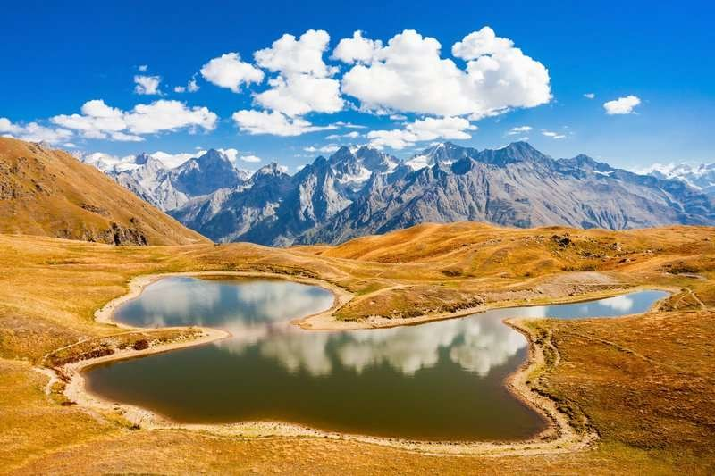

ყაზბეგი
Explore Georgia აერთებს ბილიკების კატალოგს ცოცხალ ამინდის მონაცემებთან — შეამოწმე ტემპერატურა და ქარი მანამ, სანამ გზას დაადგებოდე, და შეინახე საუკეთესო ბილიკები შენს გეგმაში.
გადადი "ამინდის შემოწმება"-ზე და აარჩიე ბილიკი ჩამონათვალიდან.
ცოცხალი ტემპერატურა და ქარის სიჩქარე ეხმარება გადაწყვეტილების მიღებაში.
შეინახე ბილიკი "ჩემი გეგმა"-ში
